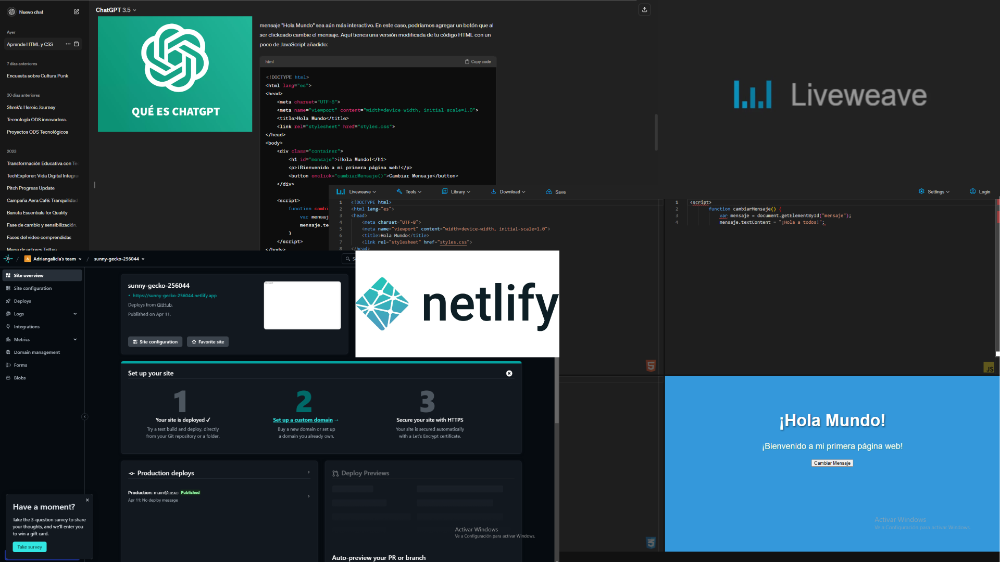
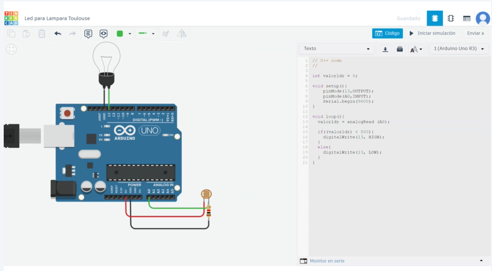

Aquí te presento todo lo enseñado en clases.
Semana 1
-

Clase Virtual: 21/03/24
Nos creamos una cuenta de GitHub, creamos un branche gh-pages donde agregaremos los archivos de una plantilla web prestablecida.
Descargamos Visual Studio Code.
Nos decidimos como salón en seleccionar una plantilla web para trabajar nuestra bitácora y portafolio. -

Clase Presencial: 23/03/24
El docente nos habla más a fondo y en confianza sobre sus virtudes y vulnerabilidades. También nos brinda indicaciones que debemos portar dentro del aula.
Los estudiantes comienzan a brindar sus conocimientos y destrezas adquiridas en el curso de laboratorio 1 y sobre Arduino.
Formación de grupos según a las carreras que estamos desempeñando y en qué podemos beneficiar y aportar como equipo.
Semana 2
-
Clase Presencial: 30/03/24
Explicación de las ODS y sus problemáticas.
Conocimiento del Visual Studio Code.
Participación de los estudiantes para reemplazar texto, imagenes, links o enlaces y pestañas de ventanas en VSC.
El docente nos brinda su plantilla prestablecida para que podamos avanzar con mayor fluidez.
Semana 3
-
Clase Virtual: 04/04/24
Descargamos Gitbash para integrarlo al Visual Studio Code y poder enlazarlo a nuestra cuenta de usuaro de GIthub con la herramienta 'terminal' de VSC.
Aprendimos a poner el autosave y el commit una vez concluido los cambios hechos en visual code y verlo en nuestra web
-

Clase Presencial: 06/04/24
Realizamos una actividad en clase donde teniamos que escribir ideas posibles y coherentes que se nos ocurran, tecnológicas o no, que resuelvan 1 o más ODS.
Semana 4
-

Clase Virtual: 11/04/24
Utilizamos ChatGPT para que nos brinden codigos prestablecidos utilizando HTML, CSS Y JS. Para poder diseñar nuestra platilla web.
Usamos el Liveweave como uso de pruebas para ver si los codigos se ejecutan correctamente antes de agregarlo a nuestro Visual Code.
Aprendimos un poco de Netlify como alternativa opcional en caso no nos funcione el GitHub.
Tuvimos asesorias con nuestro docente con respecto a los avances y consultas que tengamos en el proceso de nuestra bitacora.
-

Clase Presencial: 13/04/24
Aprendimos a descargar tipografías para diseñar nuestros textos entrando a Google Fonts. Luego agregarlo o reemplazarlo a nuestro 'main.css' para que afecte a toda nuestra bitacora.
Realizamos una actividad grupal donde debiamos pensar en una necesidad de ODS y expandir el porque surgen esas necesidades atraves de un esquema mental para luego proceder en exponer y sustentarlo.
Semana 5
-

Clase Virtual: 18/04/24
Nos dividieron por salas para luego presentar nuestros ultimos avances de nuestra bitácora digital y recibir el feedback correspondiente segun nos indique el docente.
-
Clase Presencial: 20/04/24
Introducción a los fundamentos de electrónica y sus circuitos básicos.
Nos enseñaron de los componentes como el protoboard que sera nuestra tabla de pruebas, luces leds, las resistencias, los moteres, los sensores, etc.
Nos hablaro de Arduino UNO como hardware (plataforma de código abierto), diseñada para facilitar proyectos de electrónica. Su Hardware esta compuesto por un microcontrolador y un puerto de entrada y salida.para iniciar con los proyectos tecnológicos. Nos explicaron sus puertos y alimentadores. Nos hablaron de su gran comunidad, su programación multiplataforma, su bajo costo y facil comprensión de programación.
Semana 6
-

Clase Virtual: 25/04/24
Aprendimos a realizar simulación de circuitos de Arduino en Tinkercad. Cada integrante de cada equipo tiene que investigar en la pagina de Tinkercad en la sección de circuitos, prototipos que se aproximen a la problemática que buscamos solucionar, ya que, Arduino nos ayudará como herramienta a cubrir una necesidad. En nuestro caso, hemos encontrado sensores ultrasónicos que nos ayudará a detectar la presencia o movimiento para que la luz se encienda. Aprendimos a modificar tanto el circuito encontrado, como tambien los códigos.
-

Clase Presencial: 27/04/24
Nos hablaron de realizar la Introducción a la IA de nivel empresarial de IBM.
Arduino IDE: Nos permite una comunicación entre la placa Arduino y un dispositivo mediante el puerto Serie.
Hemos armado un circuito físico y luego lo hemos programado. Teniendo encuenta las funciones del void setup y el void loop de nuestro código.Nos explicaron un poco sobre herramientas con inteliegencia artificial que nos puedan facilitar en nuestra presentación final con relación a los videos. Y que por cuenta propia investigar sobre más herramientas con IA no tan comunes que nos puedan ayudar a cubrir una necesidad ene l desarrollo de nuestros proyectos y así sumar puntos al equipo. Hocoos: Plataforma para diseñar tu web sites
Semana 7
-
Clase Presencial: 04/05/24
Realizarmos el diagrama de flujo que nos ayuda a explicar la estructura de manera comprensible el funcionamiento y significado de nuestro circuito para luego implementarlo en la página web.
Whimsical: plataforma colaborativa
Semana 8
-

Clase Virtual: 09/05/24
Explicación para poder inscribirnos y desarrollar sobre Fundamentos de la Inteligencia Artificial de IBM.
Aprendimos sobre la Fabricación digital 3D y los Fundamentos en CAD - CAE - CAM. Luego tuvimos que responder individualmente una práctica calificada
-

Clase Presencial: 11/05/24
Vimos programación de similuación de Arduino en Tinkercad. Para luego ejecutarlo en nuestro circuito físico.
Semana 9
-

Clase Virtual: 16/05/24
Nos han instruido como buscar, adquirir y realizar modelados 3D en la página de Tinkercad. Nos mandaron a salas externas para que cada integrante coordine y decidan cada uno de los puntos claves que debería tener cada uno de nuestros diseños 3D. Hemos buscado referencias que nos puedan dar algun indicio o idea de como llegaría a ser nuestro prototipo para el proyecto tecnológico.
-
Clase Presencial: 18/05/24
Para esta clase presencial hemos realizado una actividad individual donde cada miembro ha realizado propotipos creativos de cómo tienen pensando que sería el producto final para nuestro proyecto tecnológico. Para esto, hemos diseñado 3 prototipos físicos con distintas perspectivas creativas. Utilizamos materiales reciclables como carton, cartulina, UHU, cuters, etc. Luego cada integrante tuvo que sustentar su prototipo segun las funciones y componentes que tendrá nuestro producto y recibir un feedback individual.
Semana 10
-
Clase Virtual: 23/05/24
Nos dividieron por salas externas para mostrar nuestros últimos avances de nuestro diseño 3D y recibir el feedback correspondiente segun nos indique el docente sustitutorio, antes de agregarlo a nuestro informe individual.
-

Clase Presencial: 25/05/24
Se presentó el informe individual de cada miembro describiendo sus conocimientos relacionado al desarrollo de proyecto tecnológico.
Se presentó támbien lo que seria el diseño final en 3D.
Conocimientos sobre como realizar un ROI correctamente: que es una métrica útil dado a su amplio rango de aplicaciones. Medir la rentabilidad de una inversión y comparar la efectividad de una serie de inversiones distintas; simplificar la información financiera y calificar los proyectos o inversiones según sus rendimientos para la empresa; facilitar la toma de decisiones estratégicas, ya que provee datos objetivos que ayudan a elegir los cursos de acción que mejores ganancias o resultados le brindarán a la empresa.
Semana 11
-
Clase Virtual: 30/05/24
Nos explicaron de las próximas dinamicas que se iran mencionando en clase presencial.
Nos mandaron a salas externas para realizar un trello compartido con el equipo para poder organizarnos en los ultimos avances que se le iran delegando a cada miembro relacionado a nuestro producto y página web durante el promedio 3.
Luego un miembro del equipo tenia que salir a explicar la ejecución de nuestro trello en relación al desarrollo y progreso de nuestro proyecto. -

Clase Presencial: 01/06/2
Nos hablaron sobre Internet de las cosas, su funcionalidad y beneficios aplicados en dispositivos que utilizamos en nuestra vida diaria.
Realizamos una dinámica sobre Internet de las cosas (IoT). Donde cada integrande de cada equipo tiene que proponer una idea de IoT que se le podría integrar a nuestro producto tecnológico.Hemos explicado un poco el desarrollo que se ha estado avanzando con el proyecto relacionado al producto y la web.
Semana 12
-

Clase Virtual: 06/06/24
Nos enviaron a salas externas para poder coordinar con nuestro equipo sobre nuestro prototipo y diseño 3D.
Cada integrante tuvo que sustentar el diseño 3D final, explicando sus beneficios y funcionalidades que puede brindar a nuestros usuarios.Presentamos los avances de nuestra bitácora digital hasta la semana 11.
-

Clase Presencial: 08/06/24
Aprendimos de la funcionalidad de las impresoras 3D, sobre todo el Draemer. Equipo que vamos a utilizar para imprimer piezas que nos ahga de utilidad para nuestro producto tecnológico.
Aprendimos sobre el sosftware de laminado Flash Print y su interfaz para mandar a imprimir nuestro modelado 3D.
Realizamos una dinamica individual donde cada integrante debe proponer una pieza o estructura que pueda sumar valor a nuestro producto.
Semana 13
-

Clase Virtual: 13/05/24
Tuvimos una dinámica donde el equipo tenia que explicar todas las funcionalidades que brinda nuestra página web como el inicio que contiene las problemáticas que enfrentamos, la magna idea, misión y visión, los componentes, los integrantes;
la sección de problemática y público objetivo que contiene las ODS 9 y 11, el surgimiento de la idea, la funcionalidad, nuestros usuarios;
la propuesta de valor que contiene los productos y servicios, aliviadores de dolor, los beneficios, tareas del cliente, dolores, ganancias;
el proceso del proyecto: mapa de flujo, función del circuito y protipo físico, código de la programación IDE, los prototipos individuales como bocetos físicos y diseños 3D;
la escalabilidad; métricas y call to actión.
Presentamos nuestros avances de bitácora de la semana 12 -
Clase Presencial: 15/05/24
Los Equipos teniamos que exponer nuestra infografía que iba relacionado a nuestro proyecto.
Nuestra infografía contiene nuestra problemática a solucionar, nuestra propuesta, el público objetivo, la escalabilidad, los componentes y la funcionalidad.
La dinámica consistia en participar en recibir feedback de nuestros compañeros de clases y dar feedback a ellos en sus infografías.
De esta manera los equipos tendrían más claro con respecto a puntos claves que tal vez no hayamos considerado previamente y poder corregirlo para la presentación final.
En nuestro caso hemos corregido el espacio de nuestra infografía de vertical a horizontal, reducir la información, mostrar más visuales, mostrar nuestro producto tecnológico y mantener el diseño y escencia para que vaya a la par con nuestra página web.
Hemos presentador avances de guion relacionado algo video resumen y spot.
Semana 14
-
Clase Presencial: 20/06/24
El profesor creo un espacio en Miro donde nos invito a realizar una dinamica relacionado a todo lo que debe de contener las bitacoras digital.
Cada estudiante tenia que colocar un posit y escribir lo que creia que serian lospuntos principales que el profesor iba a revisar.
Luego hicimos la misma dinámica, pero relacionado con todo lo que debería contener los videos resumen, el spot, la infografía, la página web, el producto, los documentos y entregables extras.
Hubo revisión de los avances de la bitácora digital de la semana 13. -
Clase Presencial: 22/06/24
El profesor nos explicó en un calendario las fechas de los entregables
Nos mostró un cuadro de las calificaciones de cada entregable con calificación de 0-4 puntos.
Resaltando que el producto en caso no funcione se nos resta -6 puntos.
Tambien nos enseñaron las diferencias y definiciones entre la Realidad Virtual y Realidad aumentada.
Para luego agregarlo como una posible escalabiliad en nuestro proyecto.
El profesor invito a una compañera de trabajo para que reaccione a nuestros proyectos y nos brinde algun tipo de feedback. -
Clase Presencial: 22/06/24
El profesor nos explicó en un calendario las fechas de los entregables
Nos mostró un cuadro de las calificaciones de cada entregable con calificación de 0-4 puntos.
Resaltando que el producto en caso no funcione se nos resta -6 puntos.
Tambien nos enseñaron las diferencias y definiciones entre la Realidad Virtual y Realidad aumentada.
Para luego agregarlo como una posible escalabiliad en nuestro proyecto.
El profesor invito a una compañera de trabajo para que reaccione a nuestros proyectos y nos brinde algun tipo de feedback.